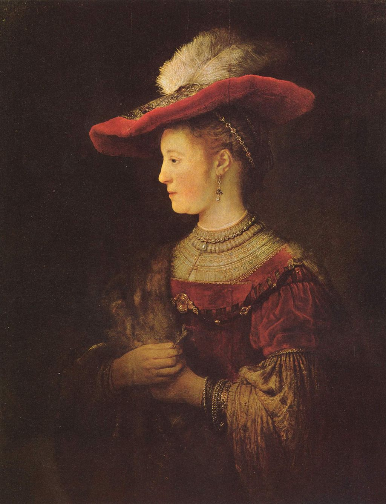
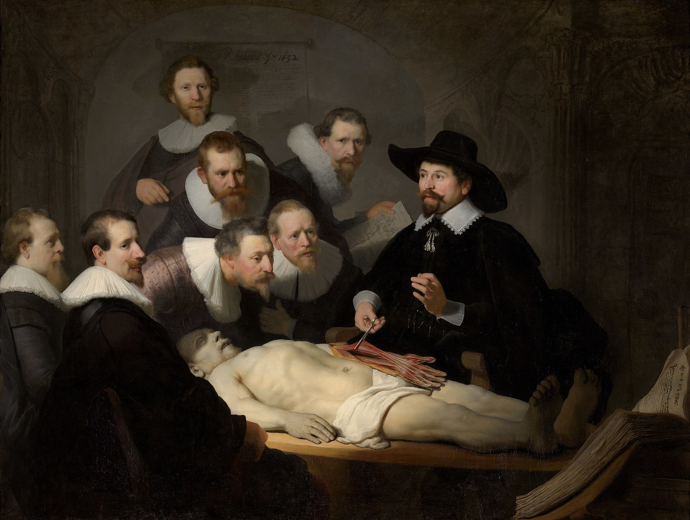
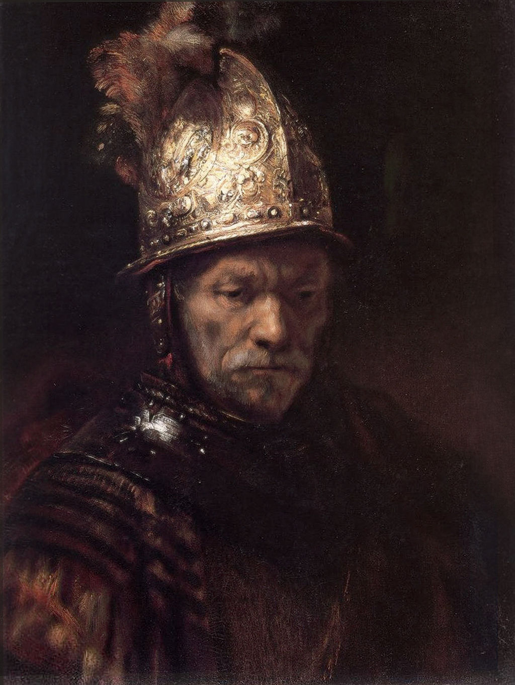
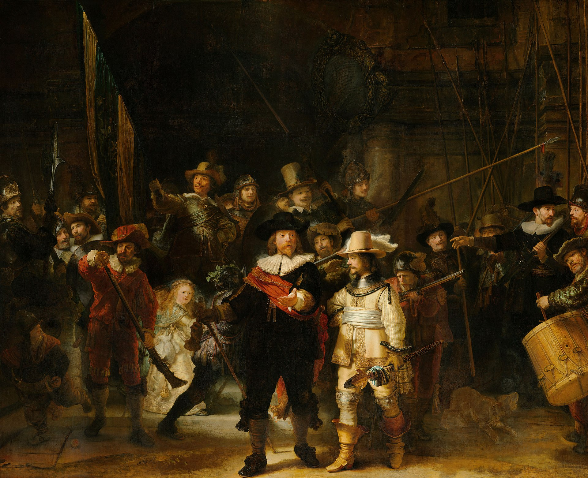
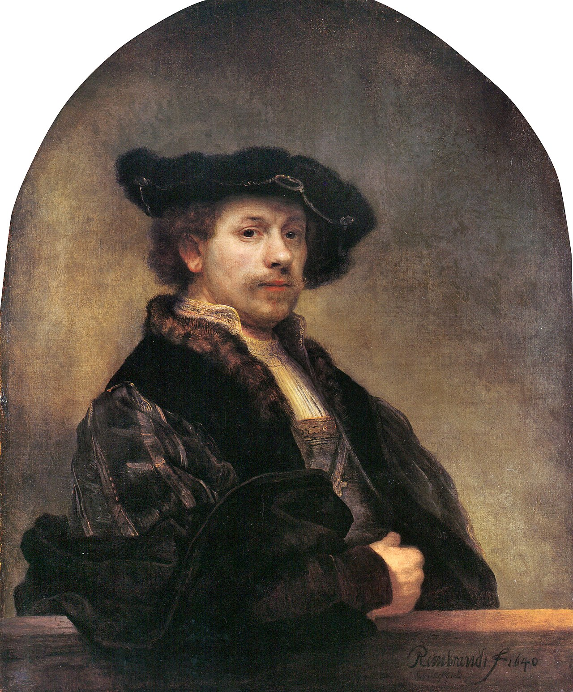
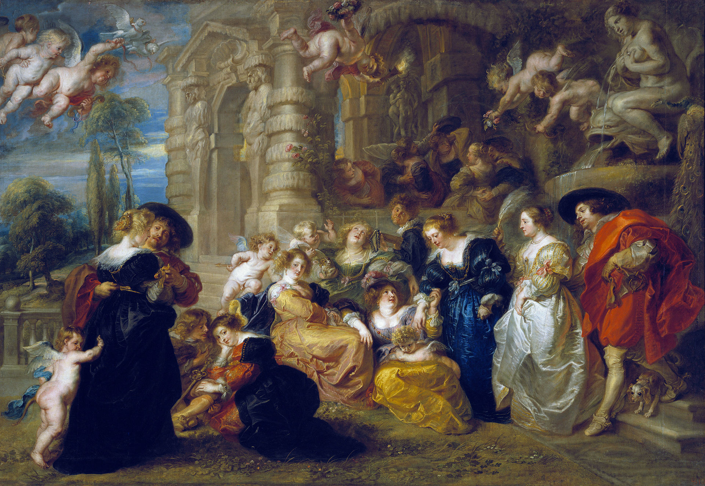
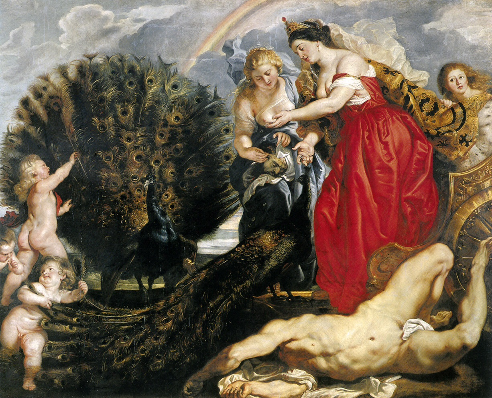
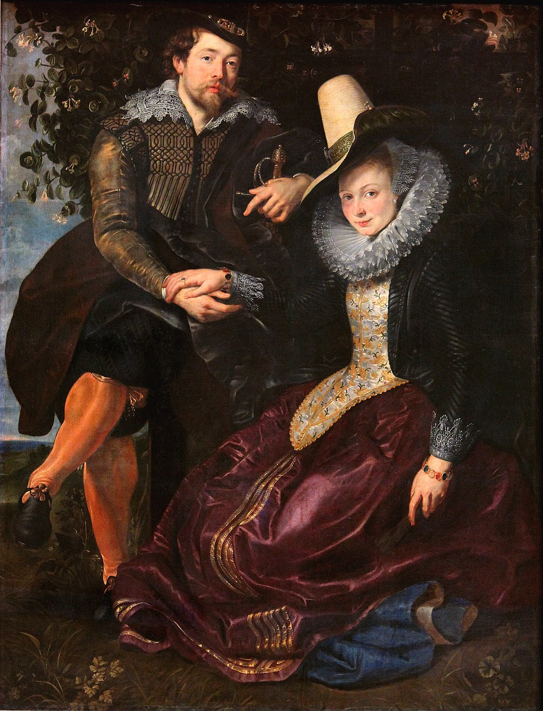
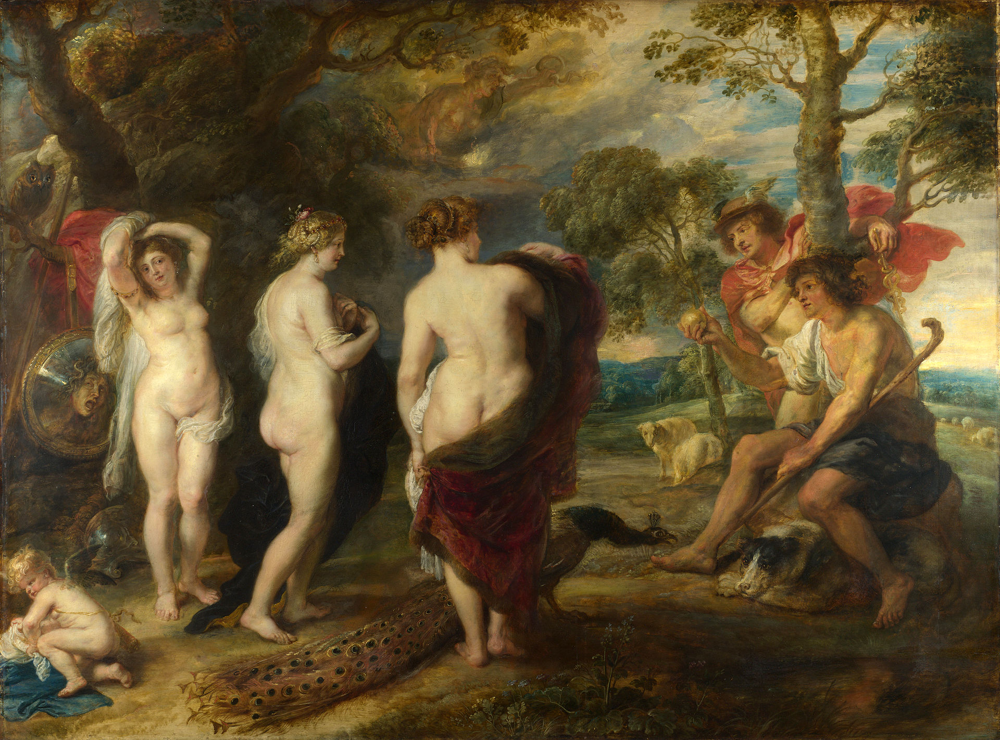
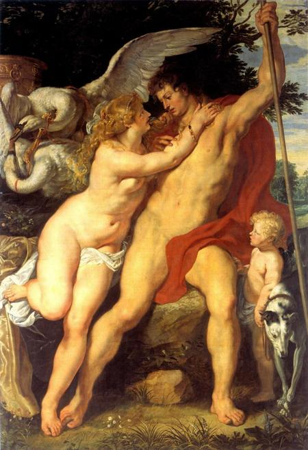

Als Barock wird eine Epoche der europäischen Kunstgeschichte bezeichnet, die nach dem Ende des Dreißigjährigen Krieges (1648) begann und – je nach geografischer Lage (in ländlichen Gebieten wurde länger barock gebaut als in städtischen) – bis ins letzte Drittel des 18. Jahrhunderts reicht. Es handelt sich nicht um einen völlig einheitlichen Stilbegriff, da es innerhalb des Barockzeitalters gleichzeitig zum Teil sehr verschiedene künstlerische Ausprägungen und Unterströmungen und auch eine Entwicklung gab, nicht zuletzt auch große Unterschiede in verschiedenen Gegenden und Ländern. Eine grobe Unterteilung in drei oder vier Unterepochen ist üblich, deren zeitliche Abgrenzung jedoch nicht völlig eindeutig angegeben werden kann: Frühbarock (bis ca. 1650), Hochbarock (ca. 1650–1700), Spätbarock (ca. 1700–1730) und Rokoko (ca. 1730–1760/70). Gelegentlich werden Spätbarock und Rokoko gleichgesetzt, andererseits wird das Rokoko auch als eigenständige Epoche angesehen. Barock und Aufklärung, die oft als Gegensätze gesehen werden, entwickelten sich über Jahrzehnte zeit- und ortsgleich.
Stil
Die Barockmalerei wirkt illusionistisch und täuscht plastische Elemente vor. Es werden asymmetrische Einzelformen, auf- und abschwellende Rundungen, gesteigerte Proportionen, raumgreifende Gebärden und effektvolle Perspektiven bevorzugt. Besonders CARAVAGGIO überwand den Manierismus. Er führte einen fast naturalistischen Stil des Hell-Dunkel ein und kann damit als Begründer der Barockmalerei angesehen werden. Einen eher idealisierenden Stil vertraten die Brüder CARRACCI. In den bildenden Künsten werden im Auftrag der herrschenden Schichten religiöse und mythologische Szenen dramatisch mit bewegten, kräftigen Körpern und bühnenmäßiger Inszenierung und Gestik dargestellt. Legendäre Wunder und Martyrien erhalten durch drastischen Detailnaturalismus den Anschein des Realen. Das repräsentative Bildnis des Herrschers [ANTHONIS VAN DYCK (1599–1641), HYACINTHE RIGAUD (1659–1743)] wird durchgängig vorbildlich für die allerdings auch zeitweise in handwerklicher Massenproduktion betriebene Porträtkunst.
Kunstmaterialien
Zu dieser Zeit wurde sehr viel mit Öl auf Leinwänden gemahlt. Außer dieser klassischen Mittel war es im Barock hoch angesehen an Decken zu malen. Dieser Stil war oftmals von der Renaissance inspiriert. Es auch beliebt mit starken kontrasten zu arbeiten und in derselben Farbpalette zu arbeiten. Hierfür wurden rot, braun, gelb und schwarz als Farben verwendet. Die Kirche hat die Epoche des Barocks sehr geprägt, deswegen war es übrigens in Mode Blattgold für seine Bilder zu verwenden z.B. als Heiligenschein.
Künstler und Werke
In die Zeit der barocken Malerei fallen viele bekannte Meister, wie Peter Paul Rubens oder auch Rembrandt. Beide haben niederländische Wurzeln und gelten als Vertreter des sogenannten Goldenen Zeitalters der Niederlande. Allein von Rubens gibt es eine große Zahl an bekannten Werken, die als typische Vertreter der barocken Malerei gelten. So „Venus und Adonis“ oder „Juno und Argus“. Aber auch Rembrandt hat bekannte Werke wie z.B. „Die Nachtwache“.
Ausgangspunkt war Italien, für das Michelangelo ein bekannter Vertreter wurde. Eines seiner populärsten Werke ist „Die Erschaffung Adams“.
Michelangelo: Die Erschaffung Adams

Rembrandt: Saskia

Rembrandt: Die Anatomie des Dr. Tulp

Rembrandt: Der Mann mit dem Goldhelm

rembrandt: Die Nachtwache

Rembrandt: Selbstportrait

Peter Paul Rubens: Der Liebesgarten

Peter Paul Rubens: Juno und Argus

Peter Paul Rubens: Rubens mit seiner Fraus Isabella

Peter Paul Rubens: Das Urteil des Paris

Peter Paul Rubens: Venus und Adonis